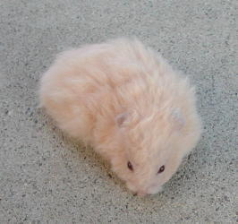
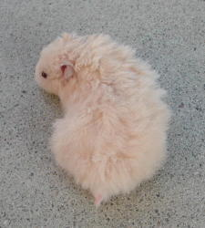
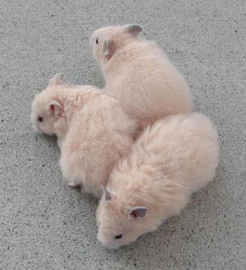

You can see that the back youngster does not have the curl in his coat.
| Rex Syrian Hamsters | ||||||||||||||||
|  |  | |||||||||||||||
| Young Rex Red-eyed Cream Youngster | ||||||||||||||||
|  | ||||||||||||||||
| Two Rex youngsters with their non-Rex littermate You can see that the back youngster does not have the curl in his coat. |
||||||||||||||||
| The Rex gene in the syrians is a recessive gene. This means that both parents must either be Rex or carry the Rex gene to produce any Rex pups. The Rex gene can be identified by curly whiskers and curl in the coat. The amount of curl in the coat varies with some being very curly while others show little curl. | ||||||||||||||||